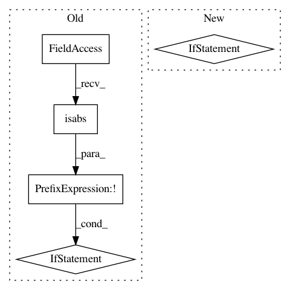

b0e41e010172c043ef5257cd220336a8c5f1a137,src/python/pants/base/build_file.py,BuildFile,__init__,#BuildFile#Any#Any#Any#,157
Before Change
:raises MissingBuildFileError: if the path does not house a BUILD file and must_exist is `True`.
if not os.path.isabs(root_dir):
raise self.InvalidRootDirError("BuildFile root_dir {root_dir} must be an absolute path."
.format(root_dir=root_dir))
self.root_dir = os.path.realpath(root_dir)
path = os.path.join(self.root_dir, relpath) if relpath else self.root_dir
self._build_basename = self._BUILD_FILE_PREFIX
After Change
path = os.path.join(self.root_dir, relpath) if relpath else self.root_dir
self._build_basename = self._BUILD_FILE_PREFIX
if project_tree.isdir(fast_relpath(path, self.root_dir)):
buildfile = os.path.join(path, self._build_basename)
else:
buildfile = path
// There is no BUILD file without a prefix so select any viable sibling
buildfile_relpath = fast_relpath(buildfile, self.root_dir)
if not project_tree.exists(buildfile_relpath) or project_tree.isdir(buildfile_relpath):
for build in self._get_all_build_files(os.path.dirname(buildfile)):
self._build_basename = build
In pattern: SUPERPATTERN
Frequency: 3
Non-data size: 5
Instances
Project Name: pantsbuild/pants
Commit Name: b0e41e010172c043ef5257cd220336a8c5f1a137
Time: 2016-01-22
Author: abishev.timur@gmail.com
File Name: src/python/pants/base/build_file.py
Class Name: BuildFile
Method Name: __init__
Project Name: eth-cscs/reframe
Commit Name: 17e0003eaee77b28f3201062aec97af0b198a041
Time: 2020-10-30
Author: karakasis@cscs.ch
File Name: reframe/core/pipeline.py
Class Name: RegressionTest
Method Name: _copy_to_outputdir
Project Name: ilastik/ilastik
Commit Name: 219459f15476426276e24329cdb6f091b5f7cf41
Time: 2019-06-26
Author: tomaz.vieira@embl.de
File Name: ilastik/applets/dataSelection/dataSelectionSerializer.py
Class Name: DataSelectionSerializer
Method Name: importStackAsLocalDataset